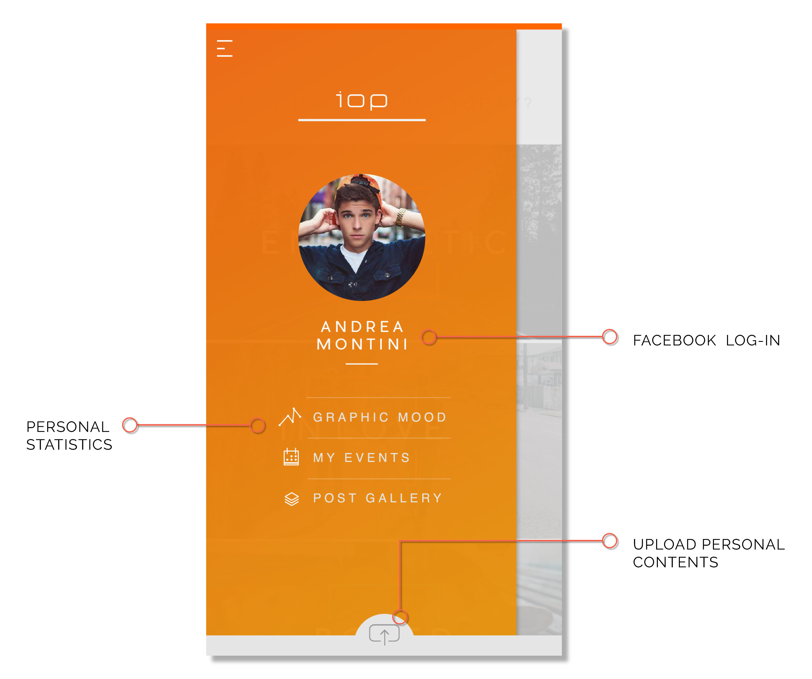
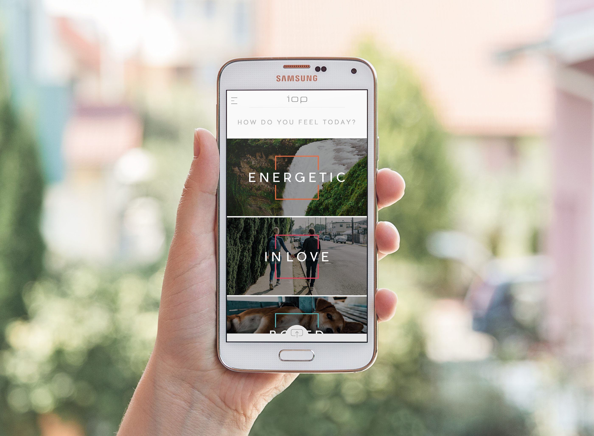
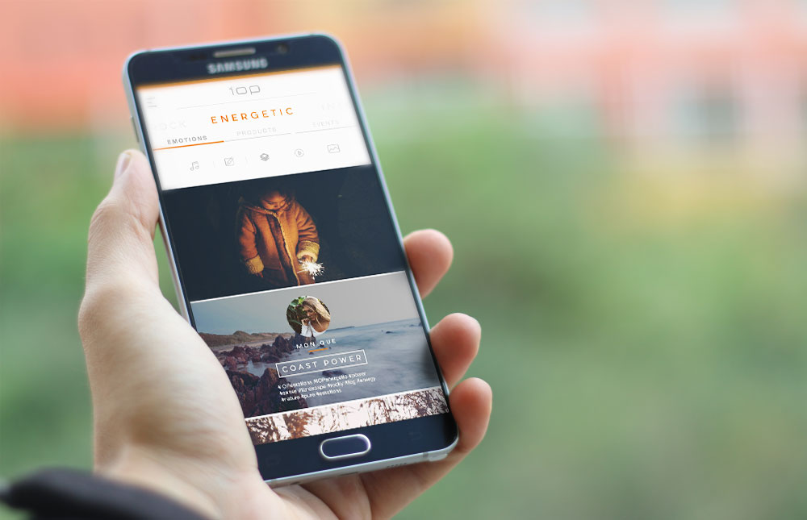
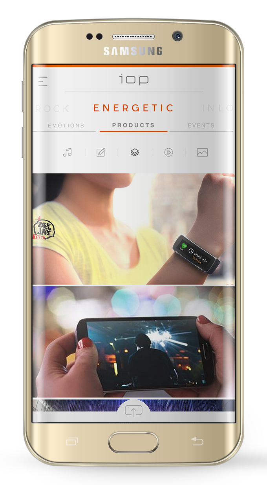
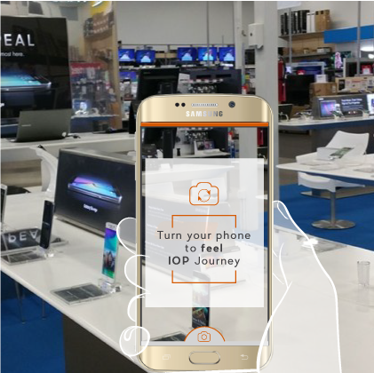
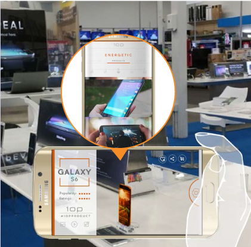
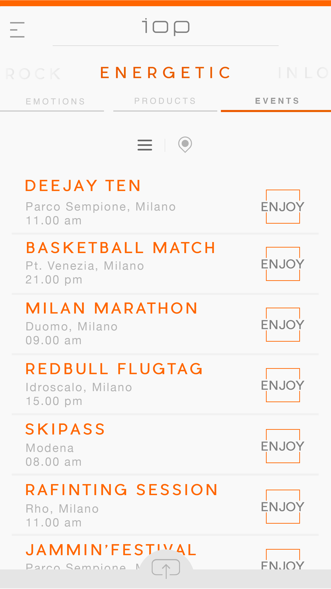
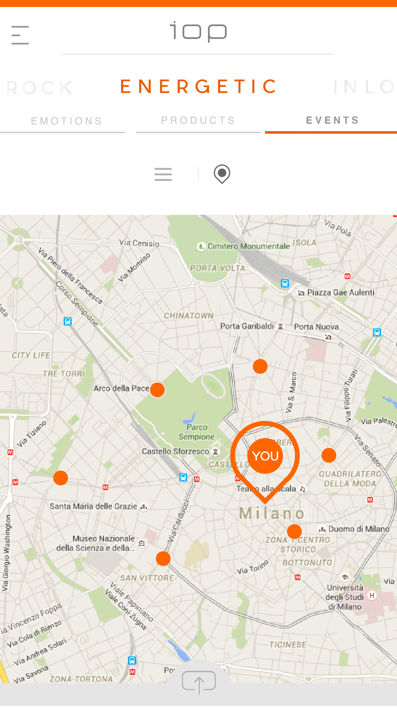
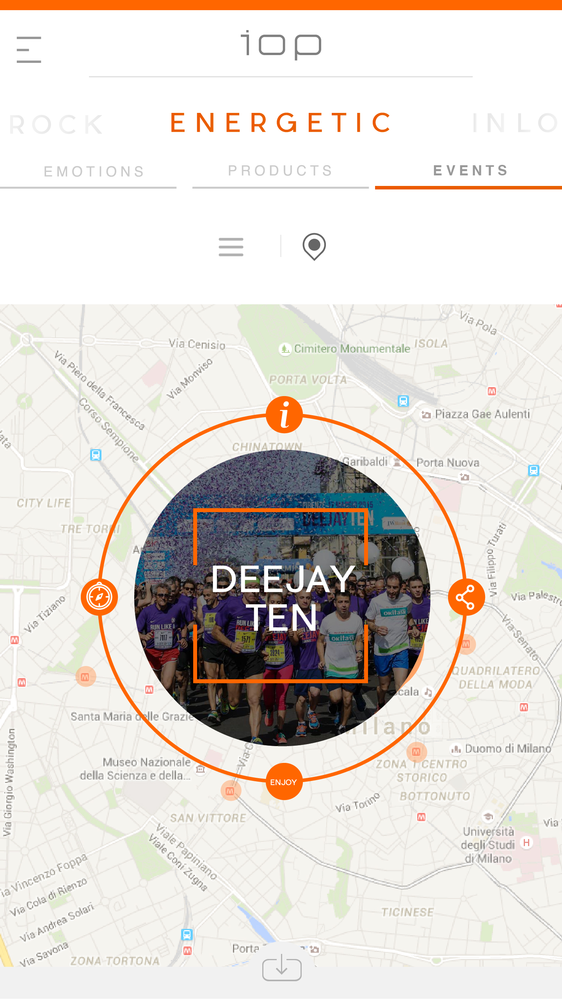
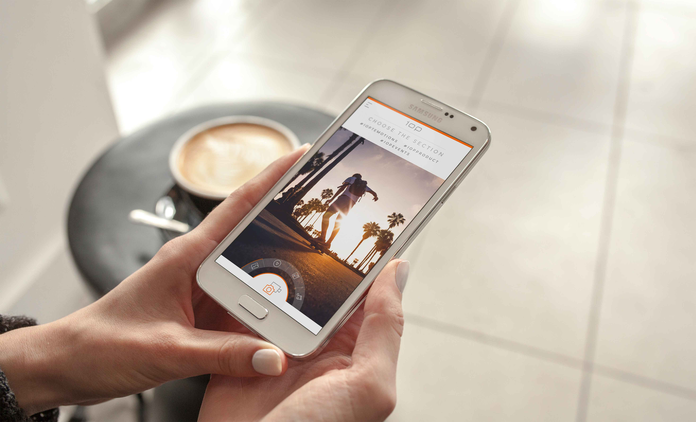

SAMSUNG • IOP
BRIEF
Creation of a digital experience for Samsung. The brand's goal was to create and design a more personal relationship between Samsung and its customers.
CONCEPT
After a deep analysis of the brand the concept is Internet Of People (IOP), an APP sponsored by Samsung. IOP means a way to create a community of users sharing their personal experiences and their emotions while interacting with Samsung.
LOG-IN
SELECT YOUR MOOD
The device becomes a personal filter to navigate Samsung universe, for this reason the user is invited to daily select his personal feeling between five emotional moods that will influence the way contents are displayed in the app.
PURE EMOTIONS
At this point the user is part of a community that, in the first section, shares the PURE EMOTIONS related to experiences and events promoted by Samsung IOP staff.
IOP PRODUCTS
The core section of IOP App focuses on the experiences and reactions that users have while using Samsung products in their everyday life. These are a new and effective kind of reviews that give a clear feedback about products in a more personal way using also photos and videos and overcoming the banal description of the specs that people can find everywhere.
THE STORE EXPERIENCE
As the user approach the store, a beacon triggers IOP app to open camera and, with augmented reality, let him see the every product in the color of the selected mood. At this moment, the customer can point a specific product and feel all the related experiences of the "Products" section of IOP App about it.
 IOP EVENTS
The third section focuses on the events that IOP selects (in different cities) and than proposes to users based on the mood they selected at the beginning. This section has the power to create a net of contacts and real interactions between people of IOP, inviting them to live some experience where they have the possibility to try for real Samsung products and, building a solid relation with the brand, be invited to fill the PURE and PRODUCT sections with the experiences that the EVENT section proposes.
  PERSONAL CONTENTS
The design is trying to let emotions speak, for this reason the user’s contents have the majority of the space, the UI is minimalistic but carefully designed to guarantee an optimal UX and usability of the mobile screen.
